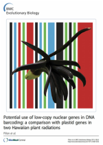

† indicates equal contributions | ** indicates book chapters or review publication
Bibliometrics: Google Scholar | ORCID ID: 0000-0001-6367-7615
Bibliometrics: Google Scholar | ORCID ID: 0000-0001-6367-7615
23. Endometrial Thickness as Measured by Transvaginal Ultrasound and the Corresponding Histopathologic Diagnosis in Women With Postmenopausal Bleeding.
Patel, V., Wilkinson, E. J., Chamala, S., Lu, X., Costagno, J., and Rush D. (2016). International Journal of Gynecological Pathology. Publisher | Pubmed | doi:10.1097/PGP.0000000000000344
Patel, V., Wilkinson, E. J., Chamala, S., Lu, X., Costagno, J., and Rush D. (2016). International Journal of Gynecological Pathology. Publisher | Pubmed | doi:10.1097/PGP.0000000000000344
22. The mammalian LINC complex regulates genome transcriptional responses to substrate rigidity.
Alam, S. G., Zhang, Q., Prasad, G., Li, Yuan., Chamala, S., Kuchibhotla, R., Birendra, K.C., Aggarwal, V., Shrestha, S., Jones, A., Levy S., Roux, K., Nickerson, J., & Lele, T. P. (2016). Scientific Reports, 6:38063. Publisher | Pubmed | doi:10.1038/srep38063
Alam, S. G., Zhang, Q., Prasad, G., Li, Yuan., Chamala, S., Kuchibhotla, R., Birendra, K.C., Aggarwal, V., Shrestha, S., Jones, A., Levy S., Roux, K., Nickerson, J., & Lele, T. P. (2016). Scientific Reports, 6:38063. Publisher | Pubmed | doi:10.1038/srep38063
21. A consensus genetic map for Pinus taeda and Pinus elliottii and extent of linkage disequilibrium in two genotype-phenotype discovery populations of P. taeda.
Westbrook, J. W., Chhatre, V. E., Wu, L. S., Chamala, S., Neves, L. G., Muñoz, P., Martínez-García. P. J., Neale, D.B., Kirst, M., Mockaitis, K., Nelson, C.D., Peter, G.F., Davis, J. M., & Echt, C. S. (2014). G3: Genes| Genomes| Genetics, g3-115. Publisher | Pubmed | doi: 10.1534/g3.115.019588
Westbrook, J. W., Chhatre, V. E., Wu, L. S., Chamala, S., Neves, L. G., Muñoz, P., Martínez-García. P. J., Neale, D.B., Kirst, M., Mockaitis, K., Nelson, C.D., Peter, G.F., Davis, J. M., & Echt, C. S. (2014). G3: Genes| Genomes| Genetics, g3-115. Publisher | Pubmed | doi: 10.1534/g3.115.019588

20. MarkerMiner 1.0: A new application for phylogenetic marker development using angiosperm transcriptomes
Chamala, S., García, N., Godden, G. T., Krishnakumar, V., Jordon-Thaden, I. E., De Smet, R., Barbazuk, W. B., Soltis, D. E., and Soltis, P. S. (2015). Applications in Plant Sciences, 3(4). Publisher | Pubmed | doi: 10.3732/apps.1400115
Chamala, S., García, N., Godden, G. T., Krishnakumar, V., Jordon-Thaden, I. E., De Smet, R., Barbazuk, W. B., Soltis, D. E., and Soltis, P. S. (2015). Applications in Plant Sciences, 3(4). Publisher | Pubmed | doi: 10.3732/apps.1400115

|
19. Genome-wide identification of evolutionarily conserved alternative splicing events in flowering plants
Chamala, S., Feng, G., Chavarro, C., & Barbazuk, W. B. (2015). Frontiers in Bioengineering and Biotechnology, 3, 33.
Publisher | Pubmed | doi: 10.3389/fbioe.2015.00033
Chamala, S., Feng, G., Chavarro, C., & Barbazuk, W. B. (2015). Frontiers in Bioengineering and Biotechnology, 3, 33.
Publisher | Pubmed | doi: 10.3389/fbioe.2015.00033
18. Primers for low-copy nuclear genes in Metrosideros and cross-amplification in Myrtaceae
Pillon, Y., Johansen, J., Sakishima, T., Chamala, S., Barbazuk, W. B., & Stacy, E. A. (2014). Applications in Plant Sciences, 2(10).
Publisher | Pubmed | doi: 10.3732/apps.1400049
Pillon, Y., Johansen, J., Sakishima, T., Chamala, S., Barbazuk, W. B., & Stacy, E. A. (2014). Applications in Plant Sciences, 2(10).
Publisher | Pubmed | doi: 10.3732/apps.1400049

17. Assembly and validation of the genome of the nonmodel basal angiosperm Amborella
†Chamala, S., †Chanderbali, A. S., Der, J. P., Lan, T., Walts, B., Albert, V. A., dePamphilis, C. W., Leebens-Mack, J., Rounsley, S., Schuster, S., Wing, R. A., Xiao, N., Moore, R., Soltis, P. S., Soltis, D. E., & Barbazuk, W. B (2013). Science, 342(6165), 1516–1517.
Publisher | Pubmed | doi:10.1126/science.1241130
†Chamala, S., †Chanderbali, A. S., Der, J. P., Lan, T., Walts, B., Albert, V. A., dePamphilis, C. W., Leebens-Mack, J., Rounsley, S., Schuster, S., Wing, R. A., Xiao, N., Moore, R., Soltis, P. S., Soltis, D. E., & Barbazuk, W. B (2013). Science, 342(6165), 1516–1517.
Publisher | Pubmed | doi:10.1126/science.1241130

|
The Amborella Genome In News:
examiner.com |Genome Web | Headlines & Global | ibtimes | King's College London | Liberty Voice | Nature Reviews Genetics | News | University at Buffalo | University of Ottawa | UC RiversideSci-news | sciencenews.org | ScienceDaily | Science Recorder The Amborella Genome Perspective/View Articles On :
|

16. The Amborella genome and the evolution of flowering plants
Amborella Genome Consortium (Chamala, S., is one of the four significant contributors) (2013). Science, 342(6165), 1241089.
Publisher | Pubmed | doi :10.1126/science.1241089
Amborella Genome Consortium (Chamala, S., is one of the four significant contributors) (2013). Science, 342(6165), 1241089.
Publisher | Pubmed | doi :10.1126/science.1241089
15.** The potential of genomics in plant systematics
Soltis, D. E., Gitzendanner, M. A., Stull, G., Chester, M., Chanderbali, A., Chamala, S., Jordon-Thaden, I., Soltis, P. S., Schnable, P. S., & Barbazuk, W. B. (2013). Taxon, 62(5), 886-898.
Publisher | doi :10.12705/625.13
Soltis, D. E., Gitzendanner, M. A., Stull, G., Chester, M., Chanderbali, A., Chamala, S., Jordon-Thaden, I., Soltis, P. S., Schnable, P. S., & Barbazuk, W. B. (2013). Taxon, 62(5), 886-898.
Publisher | doi :10.12705/625.13
14. Validation of reference transcripts in strawberry (Fragaria spp.)
Clancy, M. A., Rosli, H. G., Chamala, S., Barbazuk, W. B., Civello, P. M., & Folta, K. M. (2013). Molecular Genetics and Genomics, 288(12), 671-681.
Publisher | Pubmed | doi :10.1007/s00438-013-0780-6
Clancy, M. A., Rosli, H. G., Chamala, S., Barbazuk, W. B., Civello, P. M., & Folta, K. M. (2013). Molecular Genetics and Genomics, 288(12), 671-681.
Publisher | Pubmed | doi :10.1007/s00438-013-0780-6
13. Primers for low-copy nuclear genes in the Hawaiian endemic Clermontia (Campanulaceae) and cross-amplification in Lobelioideae
Pillon, Y., Johansen, J., Sakishima, T., Chamala, S., Barbazuk, W. B., & Stacy, E. A. (2013). Applications in Plant Sciences, 1(6).
Publisher | Pubmed | doi :10.3732/apps.1200450

Pillon, Y., Johansen, J., Sakishima, T., Chamala, S., Barbazuk, W. B., & Stacy, E. A. (2013). Applications in Plant Sciences, 1(6).
Publisher | Pubmed | doi :10.3732/apps.1200450
12. Potential use of low-copy nuclear genes in DNA barcoding: a comparison with plastid genes in two Hawaiian plant radiations
Pillon, Y., Johansen, J., Sakishima, T., Chamala, S., Barbazuk, W. B., Roalson, E. H., Price, D.K., & Stacy, E. A. (2013). BMC Evolutionary Biology, 13(1), 35.
Publisher | Pubmed | doi :10.1186/1471-2148-13-35
Pillon, Y., Johansen, J., Sakishima, T., Chamala, S., Barbazuk, W. B., Roalson, E. H., Price, D.K., & Stacy, E. A. (2013). BMC Evolutionary Biology, 13(1), 35.
Publisher | Pubmed | doi :10.1186/1471-2148-13-35
11. A genome-enabled, high-throughput, and multiplexed fingerprinting platform for strawberry (Fragaria L.)
Chambers, A., Carle, S., Njuguna, W., Chamala, S., Bassil, N., Whitaker, V., Barbazuk, W. B., & Folta, K. (2013). Molecular Breeding, 1-15.
Publisher | doi :10.1007/s11032-012-9819-3
Chambers, A., Carle, S., Njuguna, W., Chamala, S., Bassil, N., Whitaker, V., Barbazuk, W. B., & Folta, K. (2013). Molecular Breeding, 1-15.
Publisher | doi :10.1007/s11032-012-9819-3
10.** Making next-generation sequencing work for you: approaches and practical considerations for marker development and phylogenetics
Godden, G. T., Jordon-Thaden, I. E., Chamala, S., Crowl, A. A., García, N., Germain-Aubrey, C. C., Heaney, J. M., Latvis, M., Qi, X., & Gitzendanner, M. A. (2012). Plant Ecology & Diversity, 5(4), 427-450.
Publisher | doi :10.1080/17550874.2012.745909
Godden, G. T., Jordon-Thaden, I. E., Chamala, S., Crowl, A. A., García, N., Germain-Aubrey, C. C., Heaney, J. M., Latvis, M., Qi, X., & Gitzendanner, M. A. (2012). Plant Ecology & Diversity, 5(4), 427-450.
Publisher | doi :10.1080/17550874.2012.745909
9. Inside arbuscular mycorrhizal roots – molecular probes to understand the symbiosis
Ruzicka, D., Chamala, S., Barrios-Masias, F. H., Martin, F., Smith, S., Jackson, L. E., Barbazuk, W. B., & Schachtman, D. P. (2012). The Plant Genome, 6(0),1-13.
Publisher | doi :10.3835/plantgenome2012.06.0007
Ruzicka, D., Chamala, S., Barrios-Masias, F. H., Martin, F., Smith, S., Jackson, L. E., Barbazuk, W. B., & Schachtman, D. P. (2012). The Plant Genome, 6(0),1-13.
Publisher | doi :10.3835/plantgenome2012.06.0007
8.** The Early Stages of Polyploidy: Rapid and Repeated Evolution in Tragopogon
Soltis, D. E., Buggs, R. J. A., Barbazuk, W. B., Chamala, S., Chester, M., Gallagher, J. P., Schnable, P. S., & Soltis, P. S. (2012). Polyploidy and Genome Evolution (pp. 271-292): Springer Berlin Heidelberg.
Publisher | doi :10.1007/978-3-642-31442-1_14
Soltis, D. E., Buggs, R. J. A., Barbazuk, W. B., Chamala, S., Chester, M., Gallagher, J. P., Schnable, P. S., & Soltis, P. S. (2012). Polyploidy and Genome Evolution (pp. 271-292): Springer Berlin Heidelberg.
Publisher | doi :10.1007/978-3-642-31442-1_14

7. The tomato genome sequence provides insights into fleshy fruit evolution
Tomato Genome Consortium (Including Chamala, S.). (2012). Nature, 485(7400), 635-641.
Publisher | Pubmed | doi :10.1038/nature11119
On The Cover : details
Tomato Genome Consortium (Including Chamala, S.). (2012). Nature, 485(7400), 635-641.
Publisher | Pubmed | doi :10.1038/nature11119
On The Cover : details

|
The Tomato Genome In News: Nature | Reuters India | New York Times | BBC | Natural History Museum, London | VTM Het Nieuws (Belgium) | Die Zeit (Germany) | Pflanzenforschung.de | Reuters UK | El Mundo (Spain) | ABC (Spain) | Agenciasinc (Spain) | Le Figaro (France) | Sciences Et Avenir (France) | Lenta.ru (Russia) | TheMarker (Israel)
The Tomato Genome News Releases: China | Germany | Max Planck | Israel | Japan | Korea | Spain | United Kingdom | USA: University of Oklahoma | Colorado State University | Boyce Thompson Institute The Tomato Genome Perspective/View Articles:
|

6.** Next-generation sequencing and genome evolution in allopolyploids
Buggs, R. J., Renny-Byfield, S., Chester, M., Jordon-Thaden, I. E., Viccini, L. F., Chamala, S., Leitch, A. R., Schnable, P. S., Barbazuk, W. B., Soltis, P. S., & Soltis, D. E. (2012). American Journal of Botany, 99(2), 372-382.
Publisher | Pubmed | doi :10.3732/ajb.1100395
On The Cover : details
Buggs, R. J., Renny-Byfield, S., Chester, M., Jordon-Thaden, I. E., Viccini, L. F., Chamala, S., Leitch, A. R., Schnable, P. S., Barbazuk, W. B., Soltis, P. S., & Soltis, D. E. (2012). American Journal of Botany, 99(2), 372-382.
Publisher | Pubmed | doi :10.3732/ajb.1100395
On The Cover : details

5. Rapid, repeated, and clustered loss of duplicate genes in allopolyploid plant populations of independent origin
Buggs, R. J., Chamala, S., Wu, W., Tate, J. A., Schnable, P. S., Soltis, D. E., Soltis, P. S., & Barbazuk, W. B. (2012). Current Biology, 22(3), 248-252.
Publisher | Pubmed | doi :10.1016/j.cub.2011.12.027
On The Cover: details
Buggs, R. J., Chamala, S., Wu, W., Tate, J. A., Schnable, P. S., Soltis, D. E., Soltis, P. S., & Barbazuk, W. B. (2012). Current Biology, 22(3), 248-252.
Publisher | Pubmed | doi :10.1016/j.cub.2011.12.027
On The Cover: details

|
4. A physical map for the Amborella trichopoda genome sheds light on the evolution of angiosperm genome structure
Zuccolo, A., Bowers, J. E., Estill, J. C., Xiong, Z., Luo, M., Sebastian, A., Goicoechea, J. L., Collura, K., Yu, Y., Jiao, Y., Duarte, J., Tang, H., Ayyampalayam, S., Rounsley, S., Kudrna, D., Paterson, A. H., Pires, J. C., Chanderbali, A., Soltis, D. E., Chamala, S., Barbazuk, B., Soltis, P. S., Albert, V. A., Ma, H., Mandoli, D., Banks, J., Carlson, J. E., Tomkins, J., dePamphilis, C. W., Wing, R. A., & Leebens-Mack, J. (2011). Genome Biology, 12(5), R48 .
Publisher | Pubmed | doi :10.1186/gb-2011-12-5-r48
Zuccolo, A., Bowers, J. E., Estill, J. C., Xiong, Z., Luo, M., Sebastian, A., Goicoechea, J. L., Collura, K., Yu, Y., Jiao, Y., Duarte, J., Tang, H., Ayyampalayam, S., Rounsley, S., Kudrna, D., Paterson, A. H., Pires, J. C., Chanderbali, A., Soltis, D. E., Chamala, S., Barbazuk, B., Soltis, P. S., Albert, V. A., Ma, H., Mandoli, D., Banks, J., Carlson, J. E., Tomkins, J., dePamphilis, C. W., Wing, R. A., & Leebens-Mack, J. (2011). Genome Biology, 12(5), R48 .
Publisher | Pubmed | doi :10.1186/gb-2011-12-5-r48
3. A transcript accounting from diverse tissues of a cultivated strawberry
Folta, K. M., Clancy, M. A., Chamala, S., Brunings, A. M., Dhingra, A., Gomide, L., Kulathinal, R. J., Peres, N., Davis, T. M., & Barbazuk, W. B. (2010). The Plant Genome, 3(2), 90-105.
Publisher | Pubmed | doi :10.3835/plantgenome2010.02.0003
Folta, K. M., Clancy, M. A., Chamala, S., Brunings, A. M., Dhingra, A., Gomide, L., Kulathinal, R. J., Peres, N., Davis, T. M., & Barbazuk, W. B. (2010). The Plant Genome, 3(2), 90-105.
Publisher | Pubmed | doi :10.3835/plantgenome2010.02.0003
2. Characterization of duplicate gene evolution in the recent natural allopolyploid Tragopogon miscellus by next-generation sequencing and Sequenom iPLEX MassARRAY genotyping
†Buggs, R. J., †Chamala, S., Wu, W., Gao, L., May, G. D., Schnable, P. S., Soltis, D. E., Soltis, P. S., & Barbazuk, W. B. (2010). Molecular ecology, 19 Suppl 1, 132-146.
Publisher | Pubmed | doi :10.1111/j.1365-294X.2009.04469.x.
†Buggs, R. J., †Chamala, S., Wu, W., Gao, L., May, G. D., Schnable, P. S., Soltis, D. E., Soltis, P. S., & Barbazuk, W. B. (2010). Molecular ecology, 19 Suppl 1, 132-146.
Publisher | Pubmed | doi :10.1111/j.1365-294X.2009.04469.x.
1. Evolutionary selective pressure on three mitochondrial SNPs is consistent with their influence on metabolic efficiency in Pima Indians
Chamala, S., Beckstead, W. A., Rowe, M. J., & McClellan, D. A. (2007). International Journal of Bioinformatics Research and Applications, 3(4), 504-522.
Publisher | Pubmed | doi :NA
Chamala, S., Beckstead, W. A., Rowe, M. J., & McClellan, D. A. (2007). International Journal of Bioinformatics Research and Applications, 3(4), 504-522.
Publisher | Pubmed | doi :NA